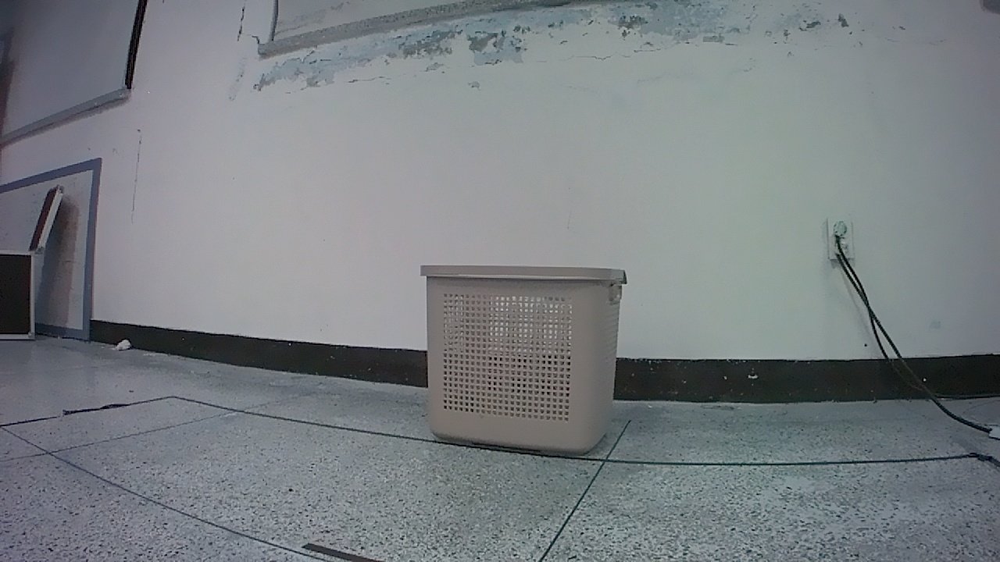
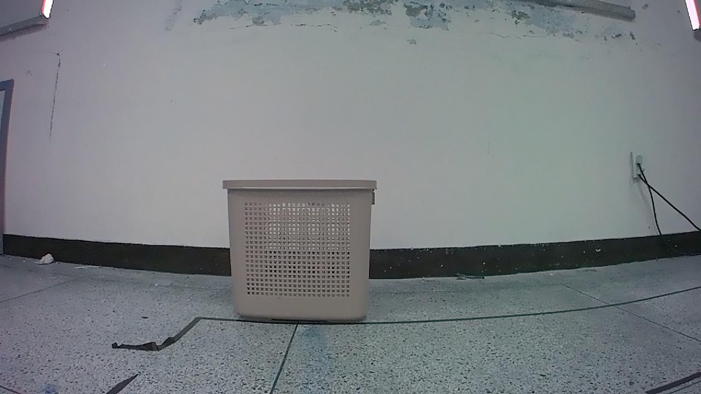
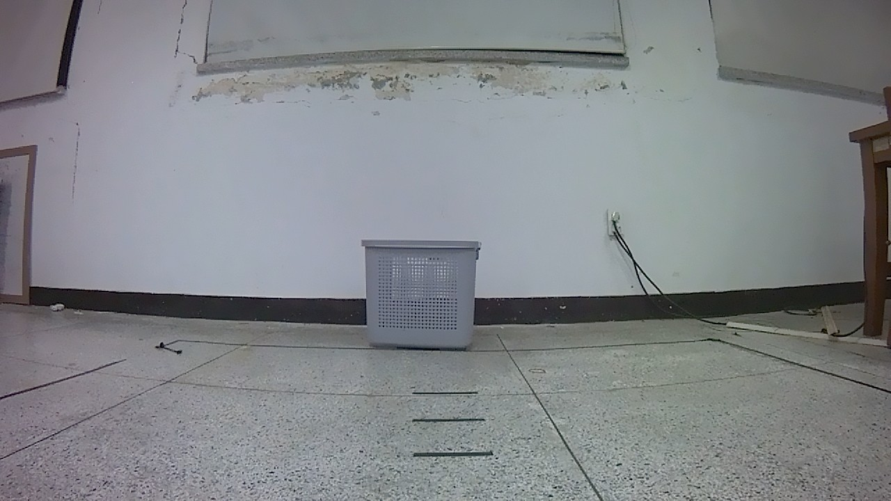
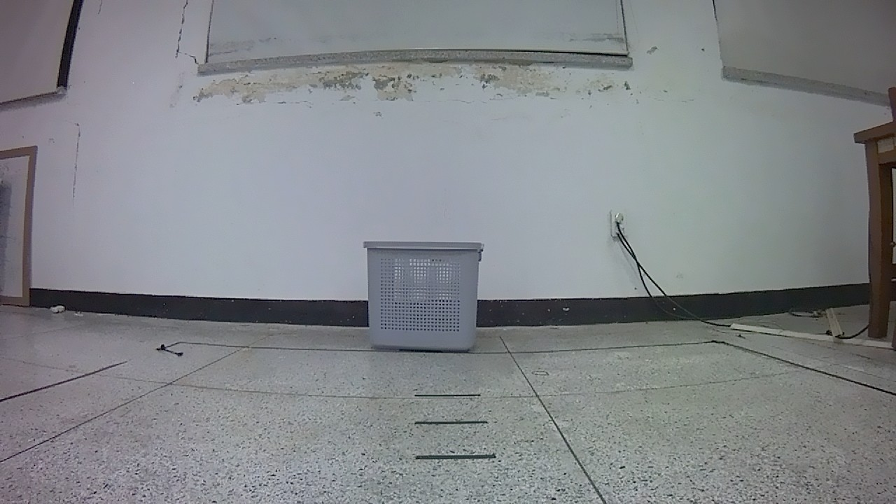
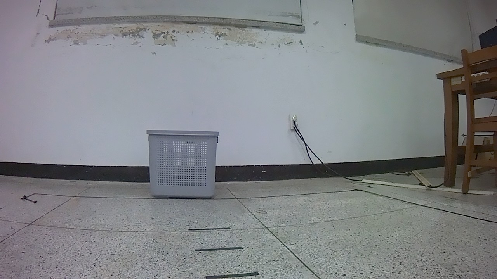
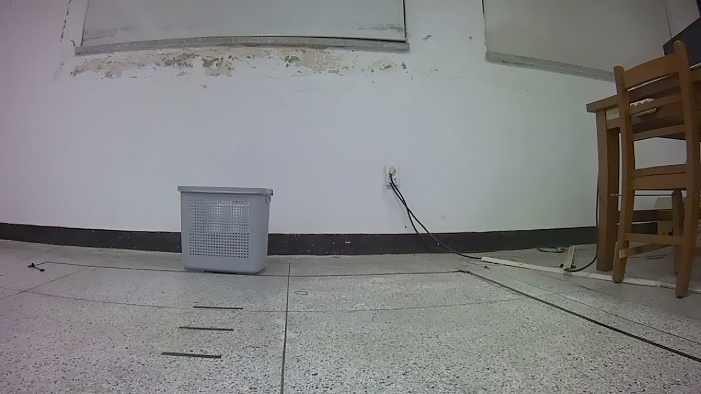
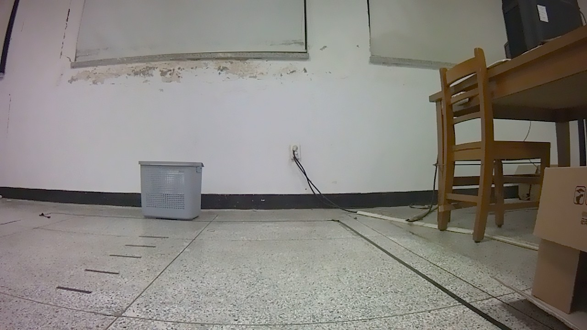

Grounding Proof & Training Momentum Analysis
Session: session_20260403_050653
Dataset: mobile_vla_dataset_v3


Training distribution was 74.5% straight. The model "Sees" the basket correctly but "Decides" to go straight based on this historical memory.

The gray basket is located at [425, 452, 578, 548]

The gray basket is located at [425, 452, 578, 548]

The gray basket is located at [425, 452, 578, 548]

The gray basket is located at [425, 452, 578, 548]

The gray basket is located at [425, 452, 578, 548]